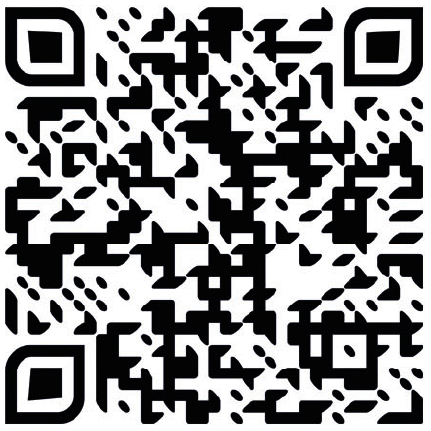

LIVE: SYSTEM ACTIVE
CASPER DE BRUYN
> CMD Student | Maker | Linux Homelab Architect
Welcome to my digital workshop. My name is Casper (Delft, '97). I bridge the gap between atoms and bits.
Rooted in woodworking and physical craft—from building custom cabinets inspired by Poul Cadovius to floating benches with French cleats—I now fuse this maker-mindset with the digital landscape of Communication and Multimedia Design (CMD).
Whether I'm architecting a private Linux AI Homelab, organizing gaming communities, or designing immersive spatial installations, my goal is simple: to pull you out of reality and into a story.

// 02 THE PORTFOLIO DOSSIER

Plastic Soup

Grijpmachine

Zeefdrukken

The Grinch

HU Begeleidt

Kodak Project

OSRS Poster

Sophie's Picnic

Samen Spelen

Vechtclub XL

School Archive
// 03 TRANSMISSION
Ready to collaborate? Let's connect.